⟹ taxonomy of some WWDC footages.
Typography (2020) #
Some optical sizes (⟹ SFText <20pt and SFDisplay >20pt) turned into variables fonts in 2016 to improve the size modifications.
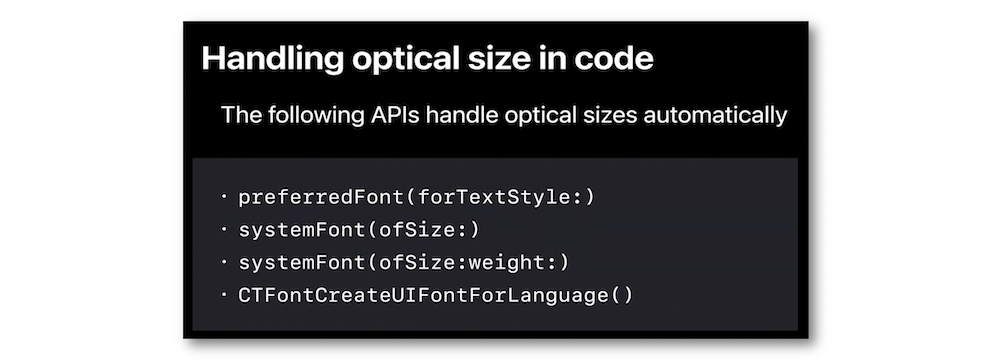
Tracking, kerning & leading #
Text requires letter-spacing to vary so it can always look good at any point size ⟹ tracking specifically refers to the action of adding space between glyphs in text layout.
It's highly recommended to use tracking in every situations.
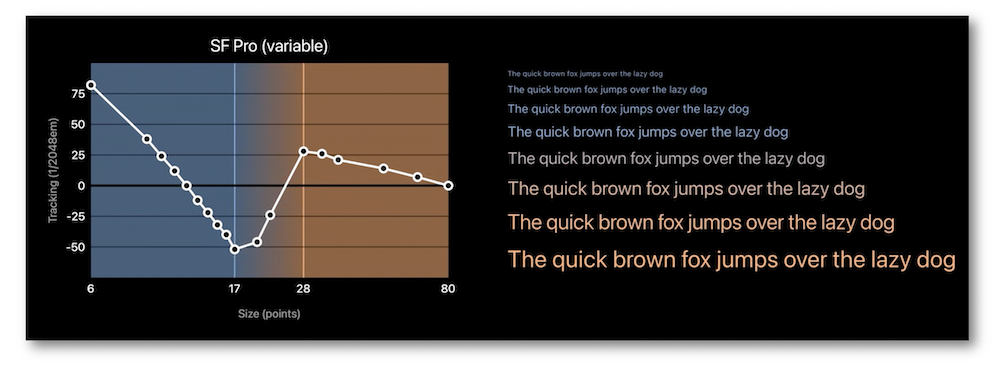
Kerning is a micro-correction of spacing that is only applied between certain pairs.
Using the tracking API is better than the kerning's because of the process on the potential ligatures.
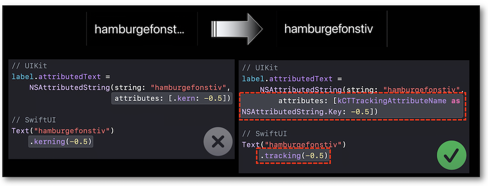
The line height is the height of font's vertical limits that can be seen as the distance between to baselines but when the distance between two lines increases, the space between them is referred to as leading.
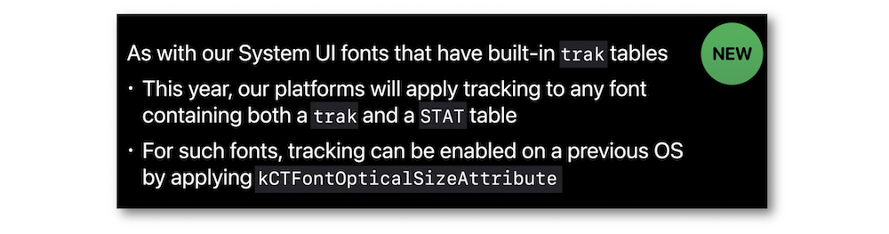
Design & spacing #
Emphasized text styles allow to use the same text style sizes with a different weight.
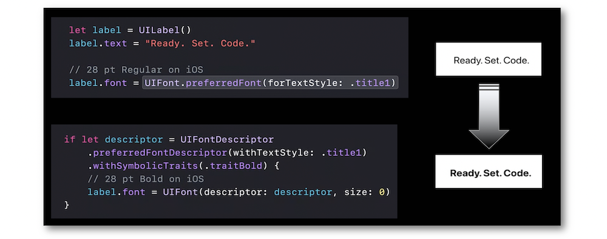
This type of emphasize is available for AppKit, SwiftUI and UIKit.
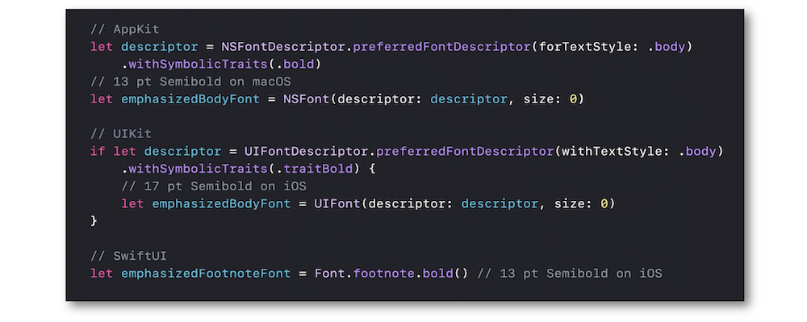
The tight and loose leading variants of text styles may be used to improve the reading experience by increasing or decreasing the line height.
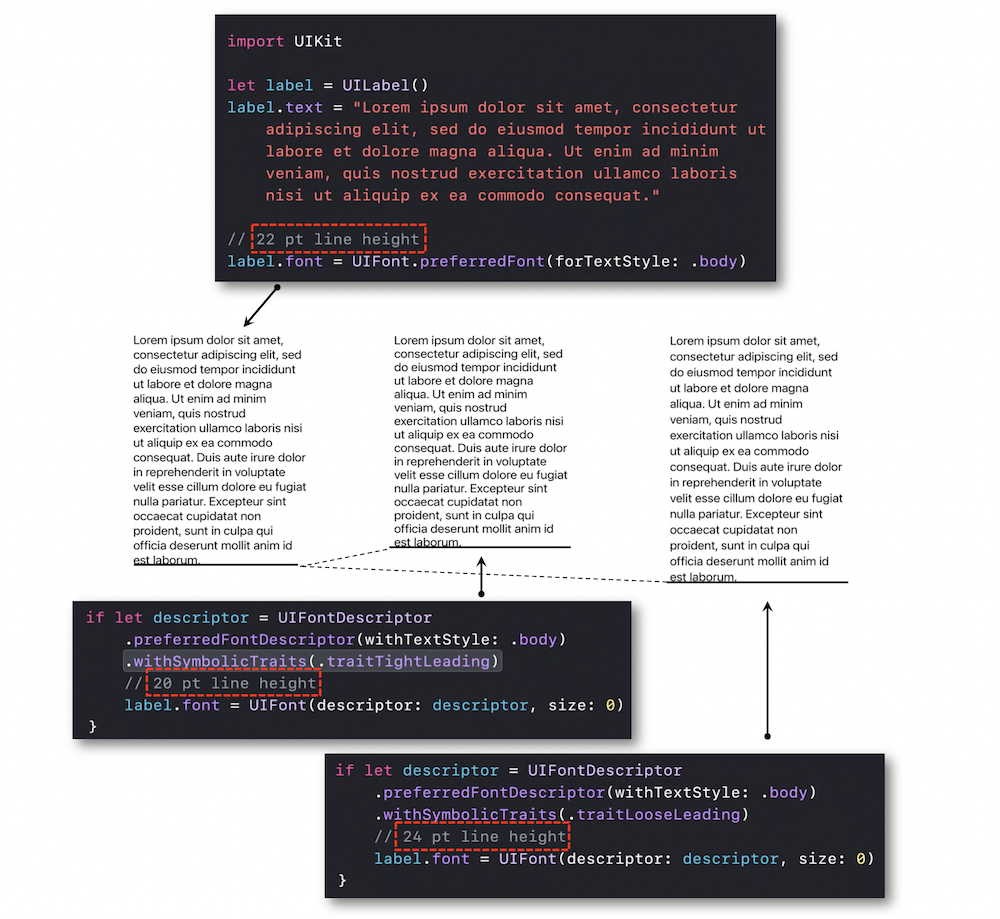
This line spacing modification is available for AppKit, SwiftUI and UIKit.
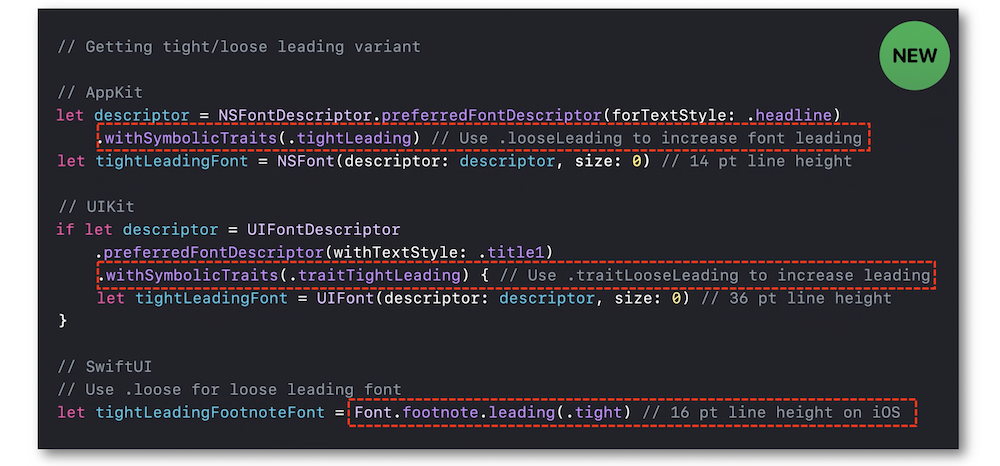
It's possible to change the design of an existing font descriptor that describes a system UI font.
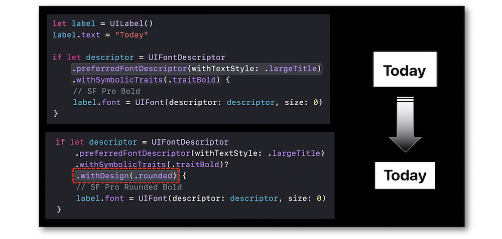
This access system font design is available for AppKit, SwiftUI and UIKit.
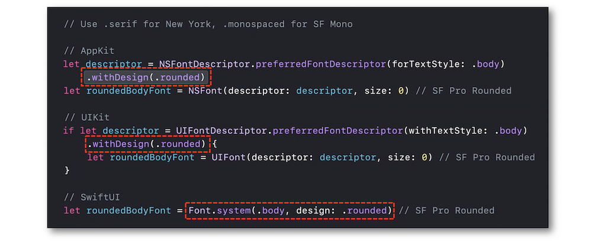
The -apple-system font family introduced by Webkit to use San Francisco font in CSS has now a standard name: system-ui with a set of CSS font family names, like ui-rounded, ui-serif and ui-monospace to Apple platforms.
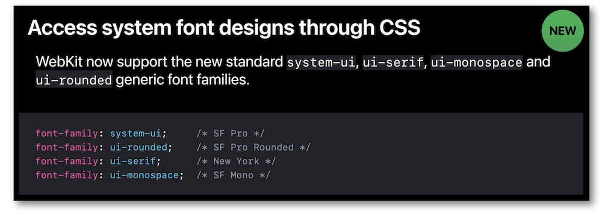
Text styles #
Text styles are a set of predefined combinations of a system font weight, a point size value and a leading value that are built in a system providing typographic hierarchy and making it easier to achieve clear and legible layouts.
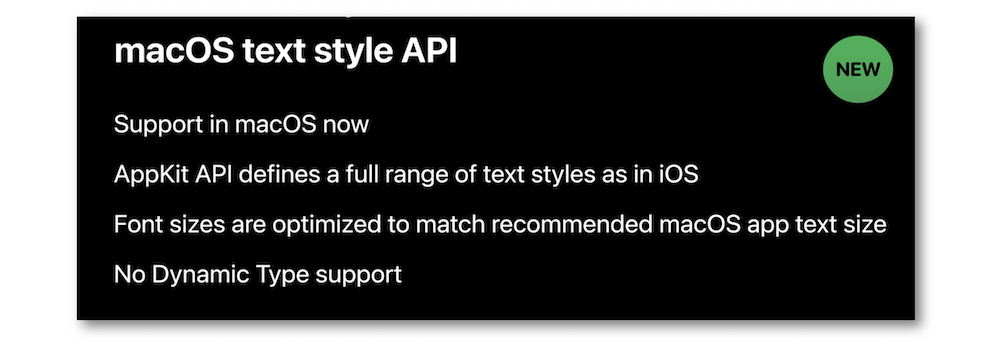
The Catalyst apps have now a behavior that may be optimized for Mac.
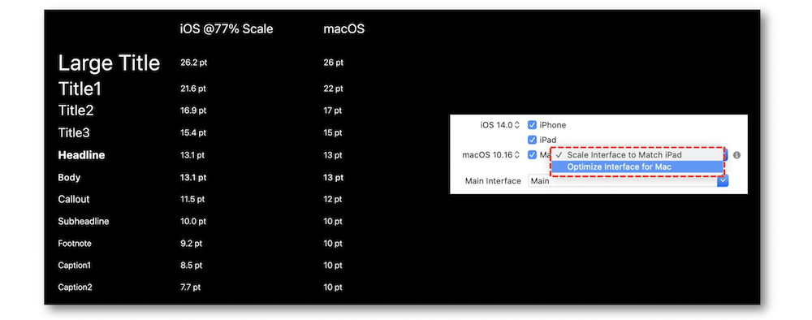
Dynamic type #
This part deals with the way to introduce the custom fonts with the dynamic type feature both in UIKit and SwiftUI.